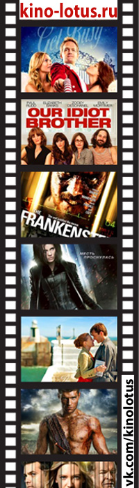
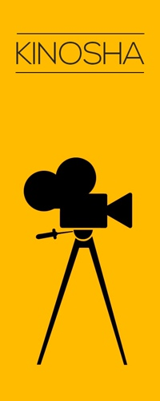

6 российских режиссеров-дебютантов, за которыми стоит следить |
 |
11 лучших трейлеров недели |
|
|||
| История кинематографа начала свой отсчёт 28 декабря 1895 года. |
|
 | Венеция-2021: немытый Камбербэтч и остросюжетный Альмодовар |
Премьера! |
||
|
Вокруг света за 80 дней
Умнейший Паспарту всегда мечтал о путешествиях. На его удачу безрассудный Филеас согласился на безумное пари — обогнуть земной шар всего за 80 дней. Теперь двум совершенно непохожим друзьям предстоит совершить невозможное, а заодно увидеть весь мир, полный фантастических созданий, живописных мест и умопомрачительных приключений. |
Кинематограф — отрасль человеческой деятельности, заключающаяся в создании движущихся изображений. Иногда также упоминается как синематограф и кинематография. |
Сведения |
||||
| Лидеры кинопроката | Самые популярные фильмы | |||||